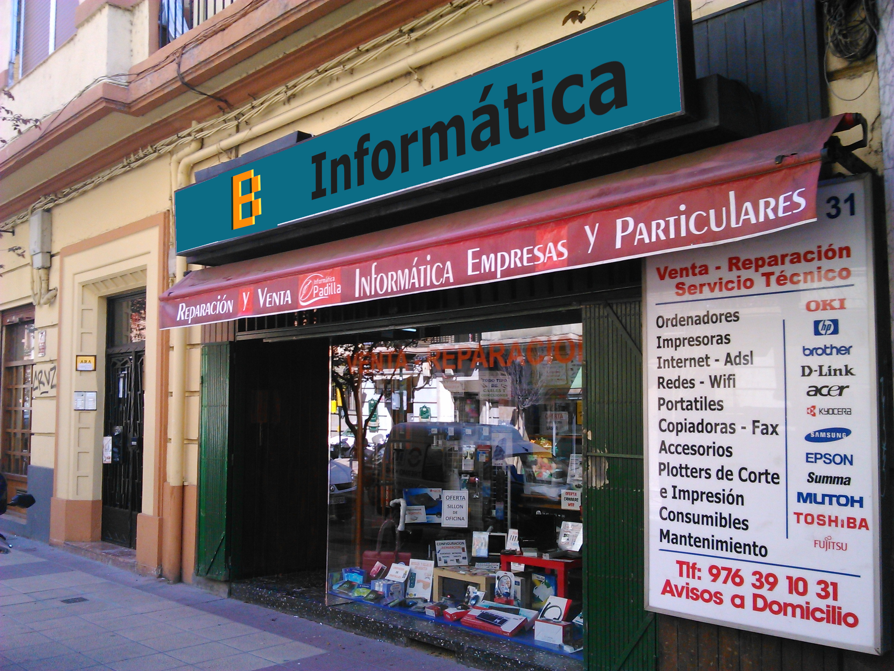
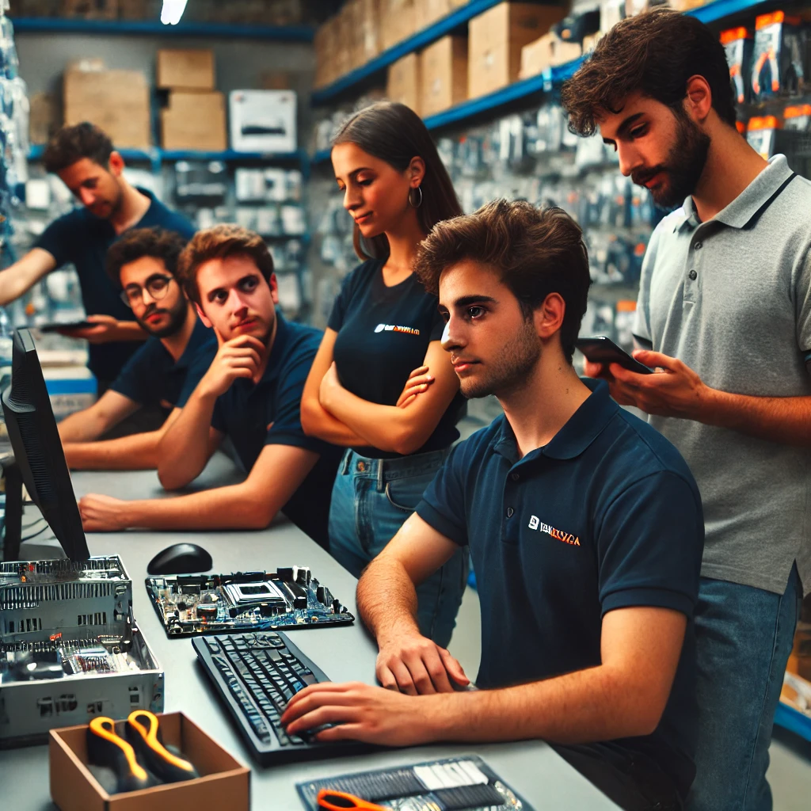

Nuestra Historia
ByteLocal nació en 2010 con el sueño de acercar la tecnología a nuestra comunidad. Desde nuestros inicios, hemos trabajado con pasión por ofrecer los mejores productos informáticos y un servicio técnico de calidad. Gracias a la confianza de nuestros clientes, hemos crecido y nos hemos consolidado como una referencia local en el sector tecnológico.
Misión y Visión
Misión
Brindar soluciones tecnológicas de calidad mediante productos de última generación y servicios personalizados que satisfagan las necesidades de nuestros clientes, siempre con un enfoque local y humano.
Visión
Convertirnos en una empresa líder en tecnología a nivel regional, reconocida por nuestra atención cercana, nuestro compromiso con la innovación y el soporte técnico profesional.
Nuestros Valores
- 💻 Innovación: Siempre estamos al día con las últimas tendencias tecnológicas.
- 🤝 Atención Personalizada: Nos adaptamos a cada cliente para ofrecer soluciones únicas.
- 🔧 Calidad y Profesionalismo: Garantizamos productos y servicios de la mejor calidad.
- 🌍 Compromiso Local: Apoyamos a nuestra comunidad con precios justos y servicios responsables.
Conoce a Nuestro Equipo
Somos un grupo de profesionales apasionados por la tecnología y el servicio al cliente. Cada uno de nosotros aporta sus conocimientos para asegurar que tu experiencia en ByteLocal sea excepcional.
